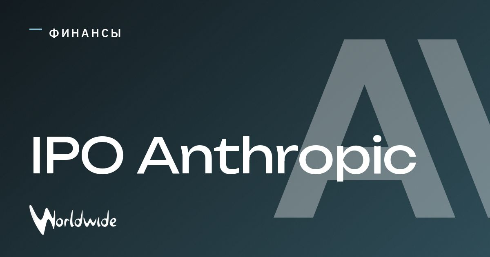

Создатель Claude планирует привлечь до 64,4 млрд $ на IPO

Anthropic, разработчик Claude, готовится к выходу на Nasdaq.
Компания рассчитывает привлечь до 64,4 млрд $. Цену размещения планируют определить на следующей неделе.
При верхней цене и с учётом всех акций оценка составит около 1 трлн $, однако аналитики ожидают 1,4 трлн $.
Обновление
Изначально Anthropic рассчитывала на оценку до 2 трлн $, но снизила ориентир на фоне турбулентности в ИИ-отрасли.
Источники: Der Spiegel, SZ Wirtschaft, n-tv